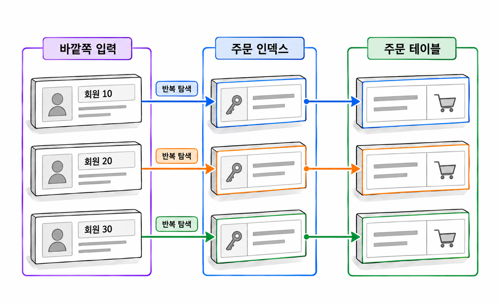

17장. 조인·서브쿼리 튜닝이란?
조인 SQL의 비용은 각 테이블을 읽는 비용과 행을 연결하는 비용으로 나뉩니다. 같은 인덱스를 사용해도 연결 순서와 반복 횟수에 따라 읽기량이 달라집니다. 서브쿼리로 작성한 SQL이 실행 계획에서는 조인으로 나타나기도 합니다.
성능을 판단할 때는 연결할 데이터를 얼마나 줄였는지 확인합니다. 안쪽 접근을 몇 번 반복하는지, 중간 결과가 얼마나 늘어나는지도 함께 봅니다.
1. 조인 방식과 비용
1.1 Nested Loops와 반복 인덱스 접근
Nested Loops 조인은 바깥쪽 입력에서 행을 읽고, 각 행에 대응하는 데이터를 안쪽 입력에서 찾는 방식입니다. 여기서 입력은 테이블 자체일 수도 있습니다. 필터나 다른 조인을 거친 행 소스일 수도 있습니다.
서울에 사는 회원의 주문을 찾는다고 가정합니다. 회원을 먼저 읽는다면 서울 회원 한 명을 읽을 때마다 그 회원의 주문을 찾습니다. 회원번호로 시작하는 주문 인덱스가 있으면 회원별 주문 구간에 접근할 수 있습니다.
비용을 이해할 때는 다음 두 값을 함께 봅니다.
| 확인할 값 | 비용에 미치는 영향 |
|---|---|
| 바깥쪽에서 전달한 행 수 | 안쪽 탐색을 반복하는 횟수 |
| 안쪽 탐색 한 번의 읽기량 | 반복 한 번에 필요한 인덱스·테이블 접근량 |
바깥쪽이 20행이고 안쪽 탐색 한 번에 평균 4블록을 읽는다면, 반복 접근은 약 80블록 규모입니다. 바깥쪽이 20만 행이 되면 같은 탐색도 약 80만 블록 규모가 됩니다. 실제 읽기량에는 캐시, 배치 접근 등도 영향을 줍니다.
인덱스가 있다는 사실만으로 반복 비용이 작아지지는 않습니다. 회원번호로 주문 1,000건을 찾은 다음 상태 조건으로 대부분을 버린다면, 회원마다 같은 낭비가 반복됩니다.

Nested Loops는 소수의 행을 연결하거나 안쪽 행을 저렴하게 찾을 때 유리합니다. 필요한 결과를 순차적으로 반환하기에도 적합합니다. 다만 뒤에 전체 정렬이나 집계가 있으면 첫 결과를 반환하기 전에 많은 작업이 필요할 수 있습니다.
실행 계획에서는 NESTED LOOPS 아래의 안쪽 연산을 확인합니다. 안쪽 인덱스의 Starts가 크다면 반복 횟수가 많다는 뜻입니다. Buffers는 이미 누적된 값이므로 여기에 Starts를 다시 곱하지 않습니다.
1.2 Hash Join과 입력 크기·메모리
Hash Join은 한쪽 입력의 조인 키로 해시 테이블을 만들고, 다른 쪽 입력에서 같은 키를 찾는 방식입니다. 해시 테이블을 만드는 쪽을 빌드 입력(build input)이라고 합니다. 해시 테이블을 조회하는 쪽은 프로브 입력(probe input)입니다.
회원과 주문을 회원번호의 동등 조건으로 연결한다면, 회원번호별 정보를 해시 테이블에 넣습니다. 주문을 읽으면서 주문의 회원번호에 대응하는 회원 정보를 찾습니다. 해시값이 같더라도 실제 조인 조건이 일치하는지 확인해야 합니다.
Hash Join은 많은 행을 동등 조건으로 연결할 때 유리한 후보입니다. 안쪽 인덱스를 행마다 반복해서 탐색하는 비용을 줄일 수 있습니다.
여기서 작은 입력이란 원본 테이블의 전체 크기를 뜻하지 않습니다. 조건을 적용한 뒤 조인에 전달하는 데이터의 크기를 말합니다. 1,000만 행 테이블도 필터 후 100행만 남으면 작은 입력이 될 수 있습니다.
메모리 사용량은 행 수뿐 아니라 행의 폭에도 영향을 받습니다. 조인에 필요한 키와 값이 넓으면 같은 행 수라도 더 많은 작업 영역이 필요합니다.
해시 테이블이 작업 영역에 충분히 들어가지 않으면 일부 데이터를 임시공간에 기록하고 나누어 처리할 수 있습니다. 이때 임시공간에 쓰고 다시 읽는 비용이 추가됩니다. Hash Join을 선택했다는 이유만으로 대량 조회가 항상 빨라지는 것은 아닙니다.
실행 통계에서는 입력 행 수와 함께 OMem, 1Mem, Used-Mem, 임시공간 관련 정보를 확인합니다. 표시되는 항목은 수집한 통계와 출력 형식에 따라 달라집니다.
1.3 Sort Merge Join과 정렬 비용
Sort Merge Join은 조인 키를 기준으로 정렬된 두 입력을 비교하면서 연결하는 방식입니다. 정렬된 키를 따라가며 대응하는 행을 찾습니다.
동등 조인에 사용할 수 있고, <, >, <=, >= 같은 범위 비교 조인에서도 후보가 됩니다. 예를 들어 거래 금액이 등급별 하한과 상한 사이에 속하는지 비교하는 경우입니다. 범위 조인에서는 한 행이 여러 행과 연결될 수 있으므로 결과 크기도 함께 확인해야 합니다.
정렬 비용은 입력 행 수, 행의 폭, 사용 가능한 메모리에 영향을 받습니다. 메모리가 부족하면 임시공간을 사용하므로 읽기·쓰기 비용이 늘어납니다. 인덱스 등에서 필요한 순서를 얻으면 일부 정렬을 줄일 수 있습니다. 다만 두 입력의 정렬이 모두 생략된다고 가정해서는 안 됩니다.
| 조인 방식 | 주요 비용 | 우선 확인할 항목 |
|---|---|---|
| Nested Loops | 안쪽 접근의 반복 | 바깥쪽 행 수, 안쪽 Starts·Buffers |
| Hash Join | 해시 테이블 생성과 탐색 | 입력 크기, 작업 영역, 임시공간 |
| Sort Merge Join | 정렬과 병합 | 정렬할 행 수·폭, 정렬 생략 여부 |
어느 방식이든 SQL에 필요한 최종 순서는 ORDER BY로 지정합니다. 조인 방식이나 현재 실행 계획의 출력 순서에 의존하면 안 됩니다. 조인 방식을 선택할 때는 입력 행 수, 접근 경로, 메모리 등을 함께 고려합니다.
2. 조인 순서와 인덱스 설계
2.1 먼저 줄일 데이터와 연결 컬럼
먼저 줄일 데이터는 원본 테이블의 행 수만으로 정하지 않습니다. 조건을 적용한 결과와 다음 테이블에 접근하는 비용을 함께 봅니다.
서울 회원이 100명이고 전체 회원이 10만 명이라면, 서울 회원을 먼저 찾는 순서가 유리할 수 있습니다. 이때 회원마다 주문을 빠르게 찾으려면 주문의 회원번호 인덱스가 필요합니다.
반대로 오늘 생성된 주문이 50건뿐이라면, 오늘 주문부터 읽고 회원 기본키로 회원을 찾는 편이 유리할 수 있습니다. 같은 테이블을 연결하더라도 검색 조건에 따라 출발점이 달라집니다.
다음 실습에서는 앞 장의 객체와 구분하도록 J17_ 접두사를 사용합니다. 실습 계정에 같은 이름의 객체가 없는 상태에서 실행합니다.
예제 17-1 — 회원과 주문의 조인 실습 데이터 준비하기
파일명: j17_setup.sql
CREATE TABLE j17_member (
member_id NUMBER(10) NOT NULL,
member_name VARCHAR2(40) NOT NULL,
region_code VARCHAR2(10) NOT NULL,
CONSTRAINT j17_member_pk PRIMARY KEY (member_id)
);
CREATE TABLE j17_orders (
order_id NUMBER(10) NOT NULL,
member_id NUMBER(10),
order_date DATE NOT NULL,
order_status VARCHAR2(10) NOT NULL,
amount NUMBER(12, 2) NOT NULL,
CONSTRAINT j17_orders_pk PRIMARY KEY (order_id),
CONSTRAINT j17_orders_member_fk
FOREIGN KEY (member_id)
REFERENCES j17_member (member_id)
);
INSERT INTO j17_member (
member_id, member_name, region_code
)
SELECT LEVEL,
'회원' || TO_CHAR(LEVEL),
CASE
WHEN LEVEL <= 100 THEN 'SEOUL'
ELSE 'OTHER'
END
FROM dual
CONNECT BY LEVEL <= 10000;
INSERT INTO j17_orders (
order_id, member_id, order_date, order_status, amount
)
SELECT LEVEL,
MOD(LEVEL - 1, 8000) + 1,
DATE '2025-01-01' + MOD(LEVEL - 1, 365),
CASE
WHEN MOD(LEVEL, 5) = 0 THEN 'CANCEL'
ELSE 'PAID'
END,
1000 + MOD(LEVEL, 100) * 100
FROM dual
CONNECT BY LEVEL <= 160000;
INSERT INTO j17_orders (
order_id, member_id, order_date, order_status, amount
)
VALUES (
160001, NULL, DATE '2025-06-01', 'PAID', 5000
);
CREATE INDEX j17_member_region_ix
ON j17_member (region_code, member_id);
CREATE INDEX j17_orders_member_ix
ON j17_orders (member_id, order_status);
COMMIT;
BEGIN
DBMS_STATS.GATHER_TABLE_STATS(
ownname => USER,
tabname => 'J17_MEMBER',
method_opt => 'FOR ALL COLUMNS SIZE 1',
cascade => TRUE
);
DBMS_STATS.GATHER_TABLE_STATS(
ownname => USER,
tabname => 'J17_ORDERS',
method_opt => 'FOR ALL COLUMNS SIZE 1',
cascade => TRUE
);
END;
/
SELECT
(SELECT COUNT(*) FROM j17_member) AS member_count,
(SELECT COUNT(*) FROM j17_orders) AS order_count
FROM dual;실행 결과
MEMBER_COUNT ORDER_COUNT
------------ -----------
10000 160001회원번호 1부터 8,000까지는 회원마다 주문이 20건씩 있습니다. 회원번호 8,001부터 10,000까지는 주문이 없습니다. 회원번호가 NULL인 주문 한 건은 비회원 주문을 나타냅니다.
통계 수집에서는 히스토그램을 만들지 않도록 설정했습니다. 실행 계획을 특정 모양으로 고정하려는 설정은 아닙니다. 환경에 따라 옵티마이저의 선택은 달라질 수 있습니다.
예제 17-2 — 지역 조건과 주문 연결 조건 함께 사용하기
이어서: 예제 17-1
파일명: j17_region_join.sql
SELECT /*+ GATHER_PLAN_STATISTICS */
/* J17_REGION_JOIN */
m.member_id,
o.order_id,
o.amount
FROM j17_member m
JOIN j17_orders o
ON o.member_id = m.member_id
WHERE m.region_code = 'SEOUL'
AND o.order_status = 'PAID';
SELECT *
FROM TABLE(
DBMS_XPLAN.DISPLAY_CURSOR(
NULL,
NULL,
'ALLSTATS LAST +PREDICATE +ALIAS'
)
);실행 결과
첫 번째 조회는 1,600행을 반환합니다. ORDER BY가 없으므로 행의 순서는 보장하지 않습니다. 두 번째 조회는 실제 실행 커서의 계획과 수집된 통계를 표시합니다.
실행 계획은 11장 2.2항의 공통 실행 방법으로 확인합니다. J17_REGION_JOIN 주석으로 커서를 찾고 SQL 식별자와 자식 커서 번호를 명시합니다.
서울 회원부터 Nested Loops로 연결한다면, 회원 100행이 주문 접근의 기준이 됩니다. 주문 인덱스의 (member_id, order_status)는 회원번호와 상태 조건을 함께 사용할 수 있습니다.
반면 주문부터 시작하는 계획이라면 같은 인덱스의 활용 방식이 달라집니다. 인덱스 순서는 검색 조건뿐 아니라 어느 입력에서 조인 키를 전달받는지도 고려해야 합니다.
2.2 외래키 인덱스의 조회·잠금 측면
외래키는 관계의 무결성을 보장합니다. 외래키 인덱스는 관련 행을 찾는 접근 경로를 제공합니다. Oracle은 외래키를 선언했다고 자식 테이블에 인덱스를 자동으로 만들지 않습니다.
예제 17-1의 j17_orders_member_ix는 두 역할을 맡습니다. 회원별 주문을 조회하는 데 사용합니다. 부모 회원의 키를 삭제하거나 변경할 때 관련 주문을 찾는 데도 사용할 수 있습니다.
외래키 인덱스가 없으면 부모 키를 삭제하거나 변경할 때 자식 테이블의 확인 비용과 잠금 영향이 커질 수 있습니다. 자식 테이블에 더 강한 테이블 잠금이 필요해 동시 DML을 방해할 수 있습니다. 부모 행을 단순히 조회하거나 부모의 일반 속성을 수정할 때마다 같은 잠금이 생긴다는 뜻은 아닙니다.
복합 인덱스가 이미 있다면 외래키용 단일 컬럼 인덱스를 무조건 추가하지 않습니다. 기존 인덱스가 외래키 컬럼을 선두에 포함하는지 확인합니다. 이 실습의 (member_id, order_status)는 member_id로 시작하므로 회원별 주문 탐색을 지원합니다.
인덱스는 삭제 정책을 바꾸지 않습니다. 자식 주문이 남아 있으면 기본 외래키 정책에 따라 회원 삭제가 거부됩니다. ON DELETE CASCADE를 사용한다면 실제 자식 삭제와 그에 따른 잠금 비용도 발생합니다.
2.3 행 수 추정 오류와 중간 결과 증가
조인의 예상 행 수가 크게 틀리면 연결 순서와 방식도 부적절해질 수 있습니다.
옵티마이저가 바깥쪽 입력을 10행으로 예상했지만 실제로는 10만 행이라면, 안쪽 인덱스를 반복하는 계획의 비용이 예상보다 커집니다. 반대로 실제로는 몇 행만 남는데 대량 입력으로 예상하면 넓은 범위의 스캔과 Hash Join을 선택할 수 있습니다.
실행 계획에서는 최상위 결과만 보지 않습니다. 아래쪽 입력부터 예상과 실제가 처음 크게 벌어지는 지점을 찾습니다. Starts가 여러 번이면 E-Rows와 누적 A-Rows를 그대로 비교하지 않습니다. 한 번의 시작당 실제 행 수를 구해 비교해야 합니다.
데이터 분포도 살펴야 합니다. 예제 17-1은 지역 코드가 두 종류지만 서울 회원은 전체의 1%입니다. 서로 다른 값의 개수만으로 균등 분포를 가정하면 서울 회원 수를 과대 추정할 수 있습니다.
추정 오류와 별개로, 조인 관계 자체가 중간 결과를 늘리기도 합니다. 주문 한 건에 주문항목이 세 개라면 주문과 주문항목을 연결한 결과는 세 행입니다. 여기에 결제 시도 두 건을 주문번호만으로 연결하면 여섯 행이 됩니다.
이 결과에서 주문금액을 합산하면 같은 주문금액이 여섯 번 더해집니다. 조인 방식 변경으로 해결할 문제가 아닙니다. 각 입력이 주문당 한 행이어야 하는지, 항목당 한 행이어야 하는지부터 확인해야 합니다.
튜닝 전에 각 조인 단계에서 한 행의 의미를 적어 봅니다. 예상보다 행이 늘었다면 업무상 필요한 확장인지 확인합니다. 연결 조건이 빠졌거나 서로 다른 상세 데이터를 함께 연결한 결과인지도 구분합니다.
3. 서브쿼리와 쿼리 변환
3.1 EXISTS·IN과 세미 조인
EXISTS는 서브쿼리가 행을 반환하는지 확인합니다. IN은 왼쪽 값과 일치하는 값이 목록이나 서브쿼리 결과에 있는지 확인합니다.
결제 완료 주문이 있는 회원만 찾는 경우, 주문 정보를 모두 출력할 필요는 없습니다. 회원마다 조건에 맞는 주문이 존재하는지만 알면 됩니다.
코드 조각
SELECT m.member_id
FROM j17_member m
WHERE EXISTS (
SELECT 1
FROM j17_orders o
WHERE o.member_id = m.member_id
AND o.order_status = 'PAID'
);같은 요구를 IN으로 표현할 수도 있습니다.
코드 조각
SELECT m.member_id
FROM j17_member m
WHERE m.member_id IN (
SELECT o.member_id
FROM j17_orders o
WHERE o.order_status = 'PAID'
);두 조회는 실습 데이터에서 같은 회원 집합을 반환합니다. 회원번호가 NULL인 주문은 어떤 회원번호와도 동등 비교로 일치하지 않습니다.
옵티마이저는 적용 가능한 서브쿼리를 언네스팅하여 조인 형태로 처리할 수 있습니다. 존재 여부만 필요하면 실행 계획에 NESTED LOOPS SEMI나 HASH JOIN SEMI 같은 세미 조인이 나타날 수 있습니다. 변환 가능 여부는 서브쿼리 구조와 의미 보존 조건 등에 따라 달라집니다.
세미 조인은 대응하는 주문이 여러 건이어도 같은 바깥 행을 그 주문 수만큼 늘리지 않습니다. 다만 바깥 입력에 이미 중복 행이 있다면 그 중복까지 제거하지는 않습니다.
일반 조인으로 바꾸면 결과 의미가 달라질 수 있습니다.
코드 조각
SELECT m.member_id
FROM j17_member m
JOIN j17_orders o
ON o.member_id = m.member_id
WHERE o.order_status = 'PAID';이 조회는 결제 완료 주문 한 건마다 회원번호를 반환합니다. 같은 회원에게 주문이 여러 건 있으면 회원번호도 반복됩니다. 존재 여부를 묻는 SQL을 일반 조인으로 바꿀 때는 중복이 결과에 미치는 영향을 먼저 확인해야 합니다.
3.2 NOT EXISTS·NOT IN의 NULL 의미
NOT EXISTS는 조건에 맞는 행이 없을 때 참입니다. NOT IN은 서브쿼리의 모든 값과 다르다는 비교입니다. 비교 대상에 NULL이 있으면 두 표현의 결과가 달라질 수 있습니다.
예제 17-3 — 비회원 주문이 있을 때 미주문 회원 찾기
이어서: 예제 17-1
파일명: j17_null_antijoin.sql
SELECT COUNT(*) AS not_exists_count
FROM j17_member m
WHERE NOT EXISTS (
SELECT 1
FROM j17_orders o
WHERE o.member_id = m.member_id
);
SELECT COUNT(*) AS not_in_count
FROM j17_member m
WHERE m.member_id NOT IN (
SELECT o.member_id
FROM j17_orders o
);
SELECT COUNT(*) AS not_in_filtered_count
FROM j17_member m
WHERE m.member_id NOT IN (
SELECT o.member_id
FROM j17_orders o
WHERE o.member_id IS NOT NULL
);실행 결과
NOT_EXISTS_COUNT
----------------
2000
NOT_IN_COUNT
------------
0
NOT_IN_FILTERED_COUNT
---------------------
2000첫 번째 조회는 대응하는 주문이 없는 회원 2,000명을 셉니다.
두 번째 조회의 서브쿼리에는 NULL이 포함됩니다. 주문이 있는 회원은 일치하는 값 때문에 제외됩니다. 주문이 없는 회원도 NULL과 다르다고 확정할 수 없어 선택되지 않습니다. WHERE는 참인 행만 선택하기 때문입니다.
세 번째 조회는 서브쿼리에서 NULL을 제외합니다. 바깥쪽 member_id도 기본키이므로 NULL이 없습니다. 이 조건에서는 첫 번째 조회와 결과가 같습니다.
서브쿼리가 빈 집합이면 NOT IN은 참입니다. 따라서 바깥 값이 NULL인 경우까지 포함해 두 표현이 동등한지 판단하려면, 양쪽의 NULL 허용 여부와 빈 집합도 확인해야 합니다.
안티 조인(anti join)은 대응하는 행이 없는 바깥 행을 반환하는 방식입니다. 실행 계획에 HASH JOIN ANTI 등이 나타날 수 있습니다. NOT IN에서는 NULL 의미를 보존하는 ANTI NA 또는 ANTI SNA가 나타나기도 합니다.
이러한 최적화는 원래 SQL의 의미를 유지합니다. 빠르게 실행된다는 이유로 NOT IN의 NULL 문제가 사라지는 것은 아닙니다.
3.3 상관 서브쿼리·스칼라 서브쿼리의 반복 비용
상관 서브쿼리(correlated subquery)는 바깥 쿼리의 컬럼을 참조하는 서브쿼리입니다. 앞의 회원별 주문 존재 확인도 상관 서브쿼리입니다.
스칼라 서브쿼리(scalar subquery)는 한 컬럼의 한 값을 반환하는 서브쿼리입니다. 결과가 0행이면 값은 NULL이고, 두 행 이상이면 오류가 발생합니다. 집계 함수만 있고 GROUP BY가 없는 서브쿼리는 구분해야 합니다. 입력이 없어도 집계 결과 한 행을 반환하기 때문입니다.
회원별 주문 수는 다음처럼 구할 수 있습니다.
코드 조각
SELECT /*+ GATHER_PLAN_STATISTICS */
m.member_id,
(
SELECT COUNT(*)
FROM j17_orders o
WHERE o.member_id = m.member_id
) AS order_count
FROM j17_member m
WHERE m.region_code = 'SEOUL';논리적으로는 회원마다 주문 수를 구합니다. 그러나 실제 실행에서도 반드시 회원마다 별도로 실행한다고 단정하면 안 됩니다. 옵티마이저가 조인 형태로 변환하거나 실행 중 결과를 재사용할 수 있습니다. 실제 반복 횟수는 실행 계획과 Starts로 확인합니다.
변환되지 않은 채 반복된다면 바깥쪽 행 수와 서브쿼리 한 번의 비용이 성능을 좌우합니다. 서울 회원 100명의 주문만 세는 작업은 회원번호 인덱스로 저렴하게 처리할 수 있습니다. 전체 회원을 대상으로 반복한다면 주문을 한 번 집계한 뒤 연결하는 방식이 유리할 수 있습니다.
코드 조각
SELECT /*+ GATHER_PLAN_STATISTICS */
m.member_id,
NVL(s.order_count, 0) AS order_count
FROM j17_member m
LEFT JOIN (
SELECT member_id,
COUNT(*) AS order_count
FROM j17_orders
GROUP BY member_id
) s
ON s.member_id = m.member_id
WHERE m.region_code = 'SEOUL';LEFT JOIN은 주문이 없는 회원도 유지합니다. 주문 집계에 대응하는 행이 없으면 s.order_count는 NULL입니다. 이때 NVL로 0을 반환합니다. 원래 COUNT(*) 서브쿼리가 주문 없는 회원에게 0을 반환하는 의미를 맞춘 것입니다.
이 재작성은 전체 주문을 먼저 집계할 가능성이 있습니다. 바깥쪽 회원이 적으면 원래 방식보다 더 많이 읽을 수 있습니다. SQL 모양만 보고 개선이라고 판단하지 않습니다.
원래 스칼라 서브쿼리는 데이터 문제로 여러 행을 반환하면 오류가 발생합니다. 이를 일반 조인으로 바꾸면 오류 대신 행이 늘어나는 결과가 나올 수 있습니다. 집계 여부, 유일성, 주문 없는 회원의 반환값까지 검증해야 합니다.
3.4 힌트로 가설을 확인할 때의 사용 범위
힌트(hint)는 SQL 주석 형태로 옵티마이저에 전달하는 지시입니다. 다른 연결 순서나 조인 방식의 비용을 실험할 때 사용할 수 있습니다.
| 힌트 | 실험 목적 |
|---|---|
LEADING(m o) | m부터 o로 연결하는 순서 지정 |
USE_NL(o) | o를 안쪽 입력으로 하는 Nested Loops 요청 |
USE_HASH(o) | o와 연결할 때 Hash Join 요청 |
USE_MERGE(o) | o와 연결할 때 Sort Merge Join 요청 |
NO_UNNEST | 지정한 서브쿼리의 언네스팅을 막아 비교 |
힌트에는 테이블 이름 대신 SQL에 선언한 별칭을 정확하게 사용합니다. USE_NL(o)만으로 전체 조인 순서까지 정해지는 것은 아닙니다. 조인 방식과 연결 순서를 함께 실험하려면 각각 지정해야 합니다.
예제 17-4 — 같은 결과로 세 조인 방식 비교하기
이어서: 예제 17-1
파일명: j17_join_methods.sql
SELECT /*+ GATHER_PLAN_STATISTICS LEADING(m o) USE_NL(o) */
/* J17_METHOD_NL */
COUNT(*) AS joined_count,
SUM(o.amount) AS total_amount
FROM j17_member m
JOIN j17_orders o
ON o.member_id = m.member_id
WHERE m.region_code = 'SEOUL'
AND o.order_status = 'PAID';
SELECT *
FROM TABLE(
DBMS_XPLAN.DISPLAY_CURSOR(
NULL, NULL,
'ALLSTATS LAST +PREDICATE +ALIAS +HINT_REPORT'
)
);
SELECT /*+ GATHER_PLAN_STATISTICS LEADING(m o) USE_HASH(o) */
/* J17_METHOD_HASH */
COUNT(*) AS joined_count,
SUM(o.amount) AS total_amount
FROM j17_member m
JOIN j17_orders o
ON o.member_id = m.member_id
WHERE m.region_code = 'SEOUL'
AND o.order_status = 'PAID';
SELECT *
FROM TABLE(
DBMS_XPLAN.DISPLAY_CURSOR(
NULL, NULL,
'ALLSTATS LAST +PREDICATE +ALIAS +HINT_REPORT'
)
);
SELECT /*+ GATHER_PLAN_STATISTICS LEADING(m o) USE_MERGE(o) */
/* J17_METHOD_MERGE */
COUNT(*) AS joined_count,
SUM(o.amount) AS total_amount
FROM j17_member m
JOIN j17_orders o
ON o.member_id = m.member_id
WHERE m.region_code = 'SEOUL'
AND o.order_status = 'PAID';
SELECT *
FROM TABLE(
DBMS_XPLAN.DISPLAY_CURSOR(
NULL, NULL,
'ALLSTATS LAST +PREDICATE +ALIAS +HINT_REPORT'
)
);실행 결과
세 집계 조회는 모두 다음 값을 반환합니다.
JOINED_COUNT TOTAL_AMOUNT
------------ ------------
1600 9600000각 집계 커서의 계획은 공통 실행 방법으로 확인합니다. 집계 결과 한 행을 인출하면 그 결과를 계산하는 조인 작업도 완료됩니다. 다만 이 실험은 전체 처리 비용을 비교합니다. 목록의 첫 행을 반환하는 속도를 직접 비교하지는 않습니다.
힌트가 적용되면 각각 NESTED LOOPS, HASH JOIN, MERGE JOIN을 확인할 수 있습니다. 접근 경로와 실제 읽기량은 환경에 따라 달라지므로 숫자를 정답으로 고정하지 않습니다.
힌트는 구문 오류, 별칭 불일치, 충돌, 적용 불가능한 조건 등으로 사용되지 않을 수 있습니다. Hint Report와 실제 연산을 확인해야 합니다.
Hash Join이 더 빨랐다면 왜 기존 계획에서 Nested Loops를 선택했는지 확인합니다. 바깥쪽 행 수를 적게 추정했는지, 안쪽 접근 비용을 낮게 추정했는지 살펴야 합니다. 힌트는 비용 차이를 드러내는 실험 도구입니다. 실험 결과는 추정 오류의 원인을 설명하는 근거가 됩니다.
한 검색값에서 유리한 힌트가 다른 검색값에서도 유리하다고 볼 수는 없습니다. 운영 SQL에 유지하려면 대표 검색값으로 결과와 비용을 검증해야 합니다. 데이터가 늘어나거나 동시에 실행될 때도 확인해야 합니다.
4. 연습문제 — 조인 방식과 서브쿼리 실행 통계 비교
예제 17-1의 데이터를 사용합니다. 동일한 데이터를 대상으로 조인 방식과 서브쿼리 표현을 바꿉니다. 결과 의미와 실행 비용을 함께 비교합니다.
요구사항
- 예제 17-4를 실행하여 세 조인 방식의 적용 여부와 실행 통계를 기록합니다.
- 지역 조건을
SEOUL에서OTHER로 바꾸어 다시 비교합니다. - 결제 완료 주문이 있는 회원을
EXISTS와IN으로 각각 조회합니다. - 주문이 없는 회원을
NOT EXISTS와NOT IN으로 각각 조회합니다. 서브쿼리의 NULL 제외 여부에 따른 차이를 설명합니다. - 회원별 주문 수를 상관 스칼라 서브쿼리와 사전 집계 후
LEFT JOIN으로 구합니다. 서울 회원과 전체 회원을 각각 대상으로 비교합니다. - 가장 비용이 큰 조회 하나를 선택하여 개선 가설을 작성합니다. 변경할 대상과 비용이 줄어들 것으로 예상하는 이유를 적습니다.
결과 검증 기준
| 조회 | 기대 결과 |
|---|---|
| 서울 회원의 결제 완료 주문 | 1,600건 |
| 서울 회원의 결제 완료 주문금액 합계 | 9,600,000 |
| 서울 외 회원의 결제 완료 주문 | 126,400건 |
| 결제 완료 주문이 있는 회원 | 6,400명 |
| 주문이 없는 회원 | 2,000명 |
| 전체 회원의 주문 수 합계 | 160,000건 |
회원번호가 NULL인 주문 한 건은 회원별 주문 수 합계에 포함되지 않습니다. 전체 주문 수 160,001건과 구분합니다.
주문 수를 비교할 때는 회원번호 1과 8,001도 확인합니다. 회원번호 1은 주문 수 20, 회원번호 8,001은 주문 수 0이어야 합니다. 재작성 후 주문 없는 회원이 사라지지 않았는지 검증합니다.
기록할 내용
| 항목 | 기록할 값 |
|---|---|
| 실행 조건 | SQL 식별용 주석, 지역 조건, 반복 실행 순서 |
| 결과 | 행 수, 합계, 중복 여부, NULL 처리 |
| 조인 | 연결 순서, 실제 조인 방식, 힌트 적용 여부 |
| 추정 | 주요 입력의 E-Rows, A-Rows, Starts |
| 읽기 | 최상위 Buffers, 반복 접근이 큰 연산 |
| 작업 영역 | 메모리·임시공간 사용 정보 |
| 시간 | 같은 조건에서 반복 측정한 경과 시간 |
읽기량은 공통 실행 방법의 포함 관계를 적용해 해석합니다. 전체 비용은 최상위 누적값으로 비교하고, 반복 접근의 위치는 하위 연산에서 찾습니다.
완료 조건
- 조인 방식 변경 전후에 결과가 같은지 확인했습니다.
- 서울 회원과 서울 외 회원에서 비용 차이가 달라지는 이유를 설명했습니다.
- 서브쿼리가 조인으로 변환되었는지 실행 계획으로 확인했습니다.
NOT IN의 NULL 처리와 반환 건수의 관계를 설명했습니다.- 스칼라 서브쿼리와 집계 조인의 반복·읽기 비용을 비교했습니다.
- 개선 가설을 실제 행 수, 반복 횟수, 읽기량으로 뒷받침했습니다.